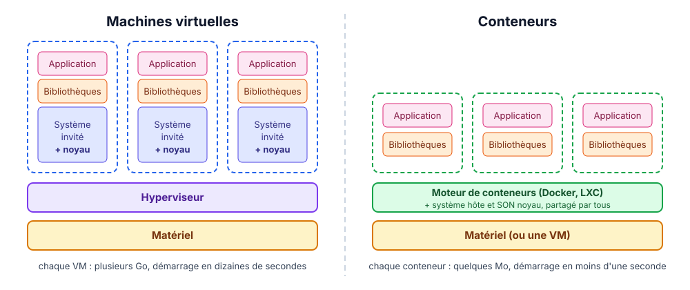
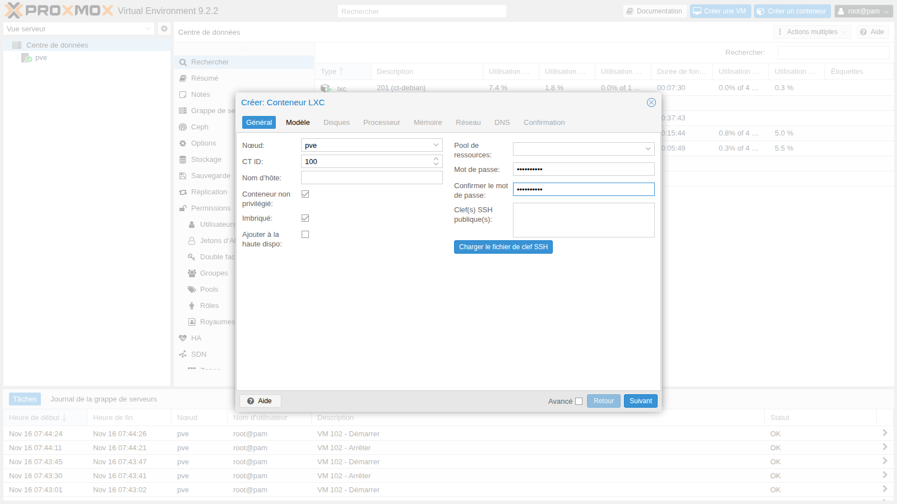
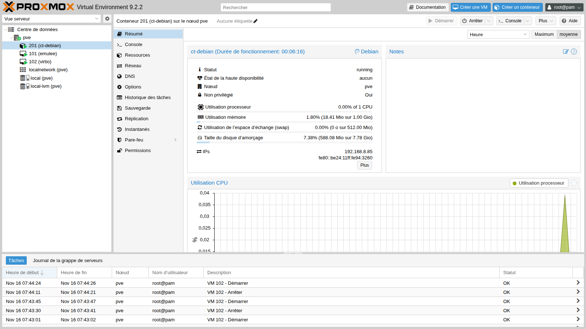

Conteneurs : Docker et LXC¶
Résumé
Un conteneur isole une application et tout ce dont elle a besoin, sans simuler une machine complète : il partage le noyau du système hôte. Résultat : il démarre en une fraction de seconde, pèse quelques Mo et se déploie partout de la même façon. Cette partie explique comment fonctionnent les conteneurs (espaces de noms, groupes de contrôle), présente les deux grandes familles, les conteneurs d'application (Docker) et les conteneurs système (LXC), et les compare aux VM.
Sans entrer dans le détail de l'administration des conteneurs, la démonstration fait toucher du doigt les différences : un serveur web nginx lancé avec Docker en moins d'une seconde dans debian-tp, puis un conteneur LXC créé dans Proxmox VE et mesuré face à une VM : temps de démarrage, mémoire, noyau, processus.
| Propriété | Valeur |
|---|---|
| Difficulté | Débutant |
| Durée estimée | 1 h 30 |
| Version décrite | Debian 13, Docker 26.1 (paquet docker.io de Debian), Proxmox VE 9.2 (LXC) |
| Place dans le parcours | Partie 11 sur 17 du parcours Virtualisation — jour 3 |
| Dernière mise à jour | 2026-11-16 |
Convention de lecture
🖥️ PC hôte · 🐧 VM Debian debian-tp · 🌐 interface web ou Shell de Proxmox (pve) · ✍️ exercice.
1. Qu'est-ce qu'un conteneur ?¶
1.1 Une VM, c'est une maison ; un conteneur, c'est un appartement¶
Reprenons l'image de l'immeuble de la partie 1. Une VM est une maison construite sur le terrain : elle a ses propres fondations, sa propre chaudière, son propre compteur (son propre noyau, ses pilotes, son système complet). Un conteneur est un appartement : il a sa porte, ses pièces et ses meubles (ses fichiers, ses programmes, ses réglages), mais il partage les fondations et la chaudière de l'immeuble (le noyau de l'hôte).

Chaque VM embarque un système complet ; les conteneurs partagent le noyau de l'hôte
1.2 Comment le noyau Linux isole un conteneur¶
Un conteneur est un groupe de processus ordinaires de l'hôte, que le noyau Linux isole grâce à deux mécanismes :
| Mécanisme | Rôle | Exemple |
|---|---|---|
| Espaces de noms (namespaces) | Donner au conteneur sa propre vue du système : ses processus, son réseau, ses points de montage, son nom de machine, ses utilisateurs | Dans le conteneur, le premier processus a le numéro 1 et l'utilisateur est root ; sur l'hôte, c'est un processus parmi d'autres, avec un autre numéro |
| Groupes de contrôle (cgroups) | Limiter les ressources du conteneur : processeur, mémoire, entrées-sorties | Un conteneur limité à 512 Mo ne peut pas consommer plus |
Il n'y a pas d'hyperviseur ni de matériel virtuel : c'est pourquoi un conteneur démarre aussi vite qu'un programme. C'est aussi sa limite : il ne peut faire tourner que des programmes faits pour le même noyau que l'hôte (un conteneur Linux sur un hôte Linux), et une faille du noyau partagé touche tous les conteneurs.
1.3 Deux familles de conteneurs¶
| Conteneur d'application | Conteneur système | |
|---|---|---|
| Ce qu'il contient | Une application et ses bibliothèques | Un système Linux presque complet (systemd, SSH, cron…) |
| Usage | Livrer et déployer une application, souvent en microservices | Remplacer une petite VM Linux, plus légère |
| Durée de vie | Jetable : on le détruit et on le recrée à chaque mise à jour | Durable : on le met à jour comme un serveur |
| Outils | Docker, Podman, orchestrés par Kubernetes | LXC, Incus, conteneurs de Proxmox VE |
Le format des images de conteneurs d'application est normalisé par l'OCI (Open Container Initiative, fondée en 2015) : une image construite avec Docker fonctionne avec Podman ou Kubernetes. Les images publiques se téléchargent depuis des registres, comme Docker Hub.
1.4 Conteneur ou VM ?¶
| Critère | VM | Conteneur |
|---|---|---|
| Isolation | Forte (hyperviseur et processeur) | Plus faible (noyau partagé) |
| Systèmes possibles | Tous (Windows sur un hôte Linux…) | Le même noyau que l'hôte |
| Démarrage | Dizaines de secondes | Moins d'une seconde à quelques secondes |
| Taille | Plusieurs Go | Quelques Mo à quelques centaines de Mo |
| Densité | Dizaines de VM par hôte | Centaines de conteneurs par hôte |
| Cas typiques | Serveurs complets, Windows, isolation forte, systèmes anciens | Applications web, microservices, environnements de développement |
En pratique, les deux coexistent : les conteneurs tournent très souvent dans des VM, ce qui combine l'isolation de la VM et la légèreté des conteneurs.
2. Démonstration 1 : un conteneur Docker dans debian-tp¶
- 🖥️ Démarrer
debian-tpet se connecter entssr. -
🐧 Installer Docker depuis les dépôts de Debian (environ 30 secondes) :
-
🐧 Lancer le conteneur de test officiel, qui affiche un message puis s'arrête :
Docker télécharge l'image
hello-worlddepuis Docker Hub, crée un conteneur, l'exécute et le supprime (--rm). Le message commence parHello from Docker!. -
🐧 Lancer un serveur web nginx en arrière-plan (
-d), en reliant le port 8080 dedebian-tpau port 80 du conteneur (-p 8080:80) : -
🌐 Relever l'adresse de
debian-tp(ip -br a, carte en192.168.x.y), puis ouvrirhttp://192.168.x.y:8080dans le navigateur du PC : la page « Welcome to nginx! » s'affiche. -
🐧 Comparer le noyau de
debian-tpet celui du conteneur, puis la mémoire utilisée par le conteneur : -
🐧 Supprimer le conteneur :
sudo docker rm -f web.
Vérifier son lab
docker psaffiche le conteneurweb, imagenginx, étatUp, et0.0.0.0:8080->80/tcp.wgetaffiche<title>Welcome to nginx!</title>.- Les deux
uname -raffichent exactement le même noyau : le conteneur n'a pas de noyau à lui. docker statsmontre un conteneur nginx qui n'utilise que quelques Mo de mémoire (environ 3,4 Mio mesurés), contre plus de 200 Mo pour une VM Debian au repos.- Une fois l'image téléchargée, lancer un nouveau conteneur nginx prend moins d'une demi-seconde.
Pour aller plus loin, plus tard
Écrire ses propres images (Dockerfile), décrire plusieurs conteneurs ensemble (Docker Compose) et les orchestrer (Kubernetes) font l'objet de formations à part. Retenir ici le principe : une image est un modèle en lecture seule ; un conteneur est une instance de cette image qui s'exécute.
3. Démonstration 2 : un conteneur LXC dans Proxmox VE¶
3.1 Télécharger un modèle et créer le conteneur¶
-
🖥️ Démarrer
pve. 🌐 Dans pve > Shell, mettre à jour la liste des modèles de conteneurs et télécharger celui de Debian 13 (environ 130 Mo) :pveam update pveam available --section system | grep debian-13 pveam download local debian-13-standard_13.6-1_amd64.tar.zstAdapter le nom du fichier à celui affiché par la deuxième commande (le numéro de version peut avoir changé).
-
🌐 Cliquer sur Créer un conteneur (en haut à droite) et remplir l'assistant :
Onglet Champ Valeur Général CT ID 201Nom d'hôte ct-debianConteneur non privilégié et Imbriqué cochés (par défaut) Mot de passe Virtu2026!(deux fois)Modèle Stockage / Modèle local/ le modèle Debian 13 téléchargéDisques Taille du disque (Gio) 8Processeur Cœurs 1Mémoire Mémoire (MiB) 1024Réseau IPv4 Statique, IPv4/CIDR 192.168.x.85/24, Passerelle (IPv4)192.168.x.2DNS Serveurs DNS 192.168.x.2Confirmation — cocher Démarrer après création, puis Terminer 
L'onglet Général de l'assistant de création de conteneur
Pourquoi « non privilégié » et « imbriqué » ?
- Non privilégié : l'utilisateur
rootdu conteneur correspond, sur le nœud, à un utilisateur sans droits (numéro 100000). Si un attaquant sort du conteneur, il n'est pasrootsur l'hôte. C'est le réglage recommandé. - Imbriqué (nesting) : nécessaire aux versions récentes de systemd à l'intérieur du conteneur. Sans lui, Proxmox affiche l'avertissement « Systemd 257 detected. You may need to enable nesting. ».
3.2 Comparer le conteneur 201 et la VM 102¶
-
🌐 pve > Shell : mesurer le temps de démarrage du conteneur (arrêté au préalable) jusqu'à ce qu'il réponde, puis celui de la VM 102 de la partie 10 jusqu'à ce que son serveur SSH réponde :
-
🌐 Comparer le noyau du nœud et celui du conteneur, et la mémoire utilisée dans le conteneur :
-
🌐 Chercher, depuis le nœud, les processus du conteneur, puis ceux de la VM :
Vérifier son lab
| Mesure | Conteneur 201 | VM 102 |
|---|---|---|
| Temps avant de répondre | 3,7 à 4,6 s | 26 à 29,5 s (jusqu'à SSH) |
Mémoire utilisée vue de l'intérieur (free -m) |
15 Mi | 229 Mi |
| Noyau | celui du nœud (7.0.2-6-pve) |
son propre noyau Debian |
| Processus vus depuis le nœud | tous (systemd, sshd…), avec l'utilisateur 100000 |
un seul processus kvm |
Exemple de mesures sur un Proxmox VE lui-même virtualisé ; les valeurs exactes varient, mais l'écart reste du même ordre.

Le conteneur LXC 201 dans l'interface de Proxmox VE
✍️ Qu'en conclure ?
Le conteneur démarre six à sept fois plus vite et consomme quinze fois moins de mémoire, parce qu'il ne démarre ni BIOS, ni noyau, ni matériel virtuel : seulement des processus. Mais le nœud voit et contrôle tous ses processus, et le conteneur dépend du noyau du nœud : un Windows ou un autre noyau Linux y est impossible. Pour un petit service Linux (DNS, serveur web, supervision), un conteneur LXC suffit souvent ; pour un système complet, isolé ou non Linux, on garde une VM.
🌐 Arrêter le conteneur et la VM : pct shutdown 201 et qm shutdown 102.
4. Questions de révision¶
- Qu'est-ce qui distingue un conteneur d'une VM ?
- À quoi servent les espaces de noms (namespaces) et les groupes de contrôle (cgroups) ?
- Quelle est la différence entre un conteneur d'application (Docker) et un conteneur système (LXC) ?
- Pourquoi ne peut-on pas faire tourner un conteneur Windows sur un hôte Linux ?
- Qu'est-ce qu'une image Docker ? Un registre ?
- Pourquoi les conteneurs LXC de Proxmox sont-ils « non privilégiés » par défaut ?
Corrigé
- Le conteneur partage le noyau de l'hôte et n'isole que des processus ; la VM a son propre noyau et un matériel virtuel complet. Conséquences : le conteneur est plus léger et plus rapide, la VM plus isolée et capable de faire tourner n'importe quel système.
- Les espaces de noms donnent au conteneur sa propre vue des processus, du réseau, des fichiers, du nom de machine et des utilisateurs ; les groupes de contrôle limitent ses ressources (processeur, mémoire, entrées-sorties).
- Un conteneur d'application contient une seule application et ses bibliothèques ; il est jetable et recréé à chaque mise à jour. Un conteneur système contient un Linux presque complet (systemd, SSH…) et s'administre comme un petit serveur.
- Parce qu'un conteneur n'a pas de noyau : il utilise celui de l'hôte. Un programme Windows a besoin d'un noyau Windows. Il faudrait une VM Windows.
- Une image est un modèle en lecture seule qui contient une application et tout ce dont elle a besoin ; un conteneur en est une instance qui s'exécute. Un registre stocke et distribue des images (Docker Hub, par exemple).
- Pour la sécurité : le
rootdu conteneur n'est, sur le nœud, qu'un utilisateur sans droits (100000). Un attaquant qui s'échapperait du conteneur n'aurait pas les droits derootsur l'hôte.
Ressources¶
- Docker — Présentation de Docker — images, conteneurs, registres (en anglais).
- Proxmox VE — Conteneurs Linux — les conteneurs LXC dans Proxmox VE (en anglais).
- Red Hat — Conteneurs et machines virtuelles — la comparaison, en français.
- Page de manuel
namespaces(7)— les espaces de noms du noyau Linux (en anglais). - Partie précédente : Types d'hyperviseurs et paravirtualisation · Partie suivante : Stockage défini par logiciel et hyperconvergence.